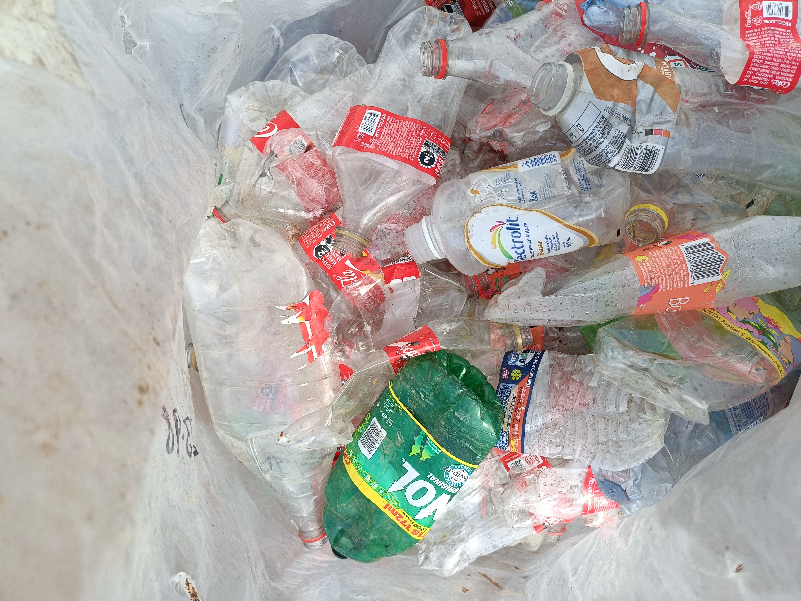
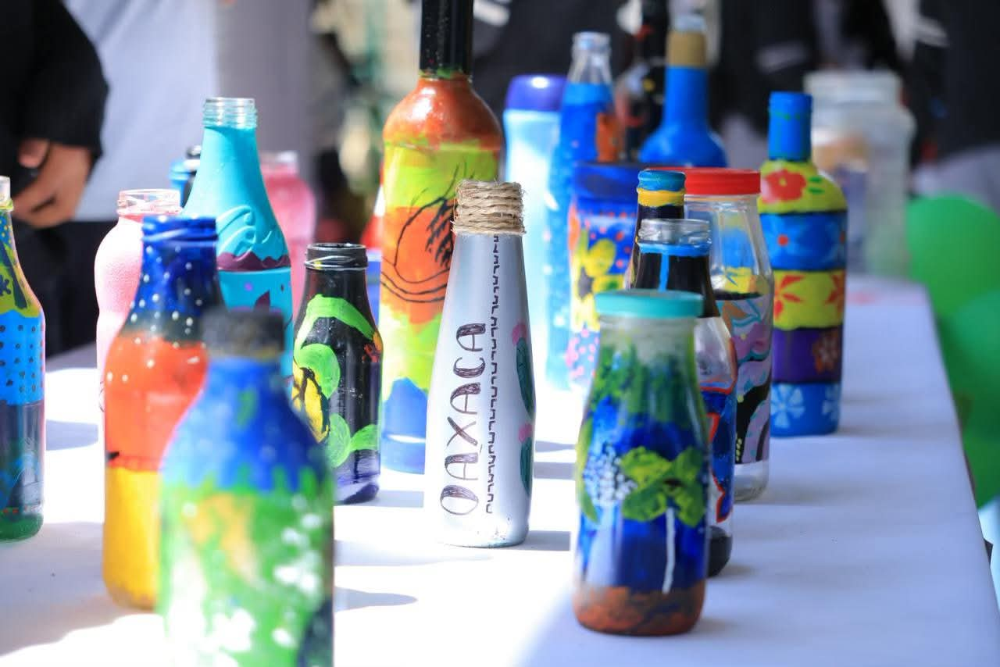
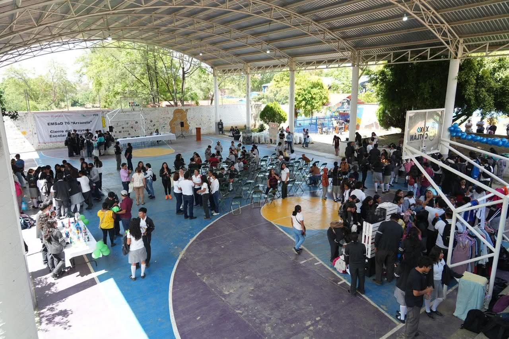
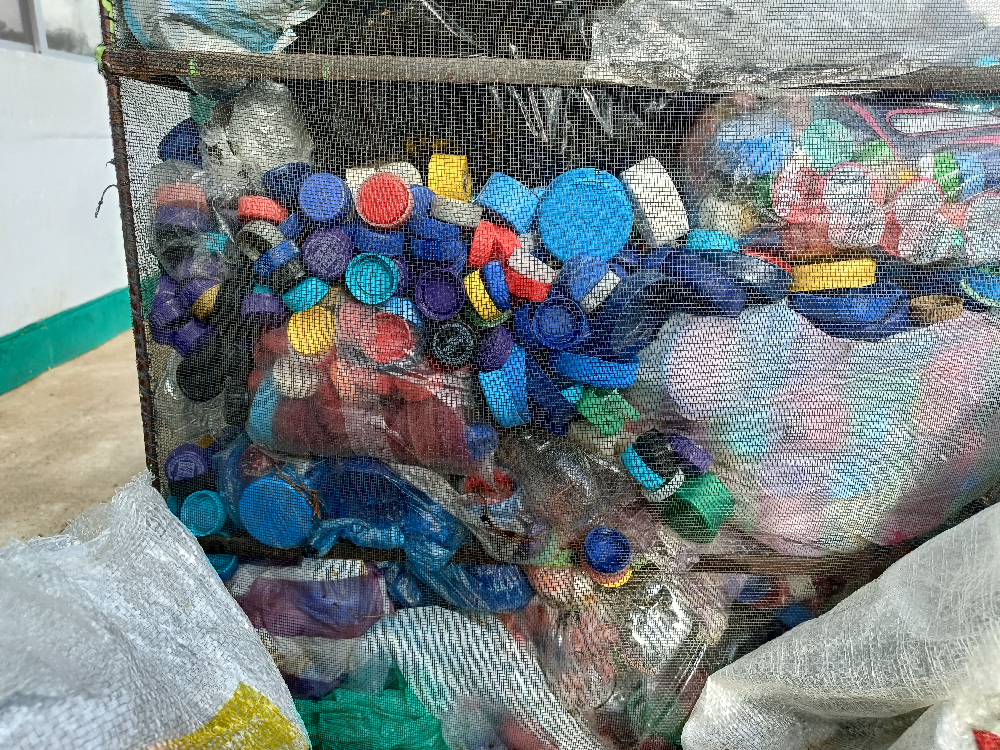

Realización de manualidas con basura reciclables
El día 05 de Junio del 2026 se realizo la demostración de las diferentes actividades en las cuales trabajaron los alumnos del plantel y se mostro las habilidades que se pueden realizar con las diferentes basuritas reciclables en la
Durante 6 meses, los alumnos del "CECyTEO" recolectaron tanto botellas PET Y tapitas para la recolección de fondos para la fundación con niños con cancer. El objetivo fue demostrar cómo un desecho puede convertirse en arte.
Materiales utilizados
Se usaron botellas PET, tapas de colores, pintura acrílica para pintar las botellas y bases de madera reciclada. Todo el material fue recaudado y conseguido por la comunidad escolar.
Resultado y aprendizaje
Uno de los retos mayores fue el trabajo en equipo, pero aún con eso, se logro un exelencte resultado se logro comprender que haciendo equipo se puede obtener grandes resultados. .



